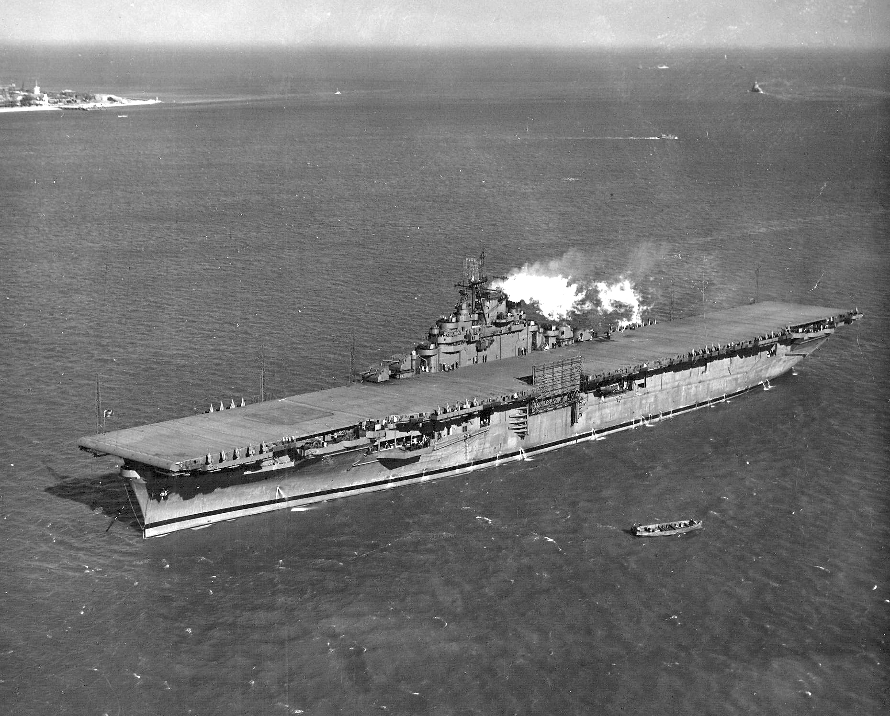
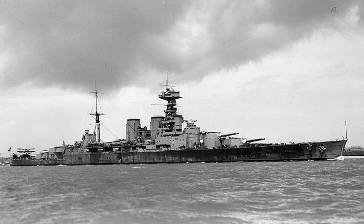

Námorné sily v druhej svetovej vojne
Druhá svetová vojna priniesla revolúciu v námornom vojenstve. Lode všetkých typov zohrávali kľúčovú úlohu v konflikte, od masívnych bojových lodí po nenápadné ponorky:
Hlavné kategórie vojnových lodí:
- Bojové lode: Hlavná útočná sila námorníctva
- Lietadlové lode: Nová éra námorného boja
- Krížniky: Univerzálne bojové plavidlá
- Torpédoborce: Rýchle a všestranné lode
- Ponorky: Tiché ale smrteľné zbrane
Významné lode vojny

Bismarck
Nemecká bojová loď
Technické údaje:
- Dĺžka: 251 m
- Výtlak: 41,700 ton
- Hlavná výzbroj: 8 × 380 mm delá
- Maximálna rýchlosť: 30 uzlov
Najslávnejšia nemecká bojová loď, potopená v máji 1941 po dramatickom prenasledovaní.

Yamato
Japonská bojová loď
Technické údaje:
- Dĺžka: 263 m
- Výtlak: 65,000 ton
- Hlavná výzbroj: 9 × 460 mm delá
- Maximálna rýchlosť: 27 uzlov
Najväčšia bojová loď všetkých čias, symbol japonskej námornej moci.

USS Essex
Americká lietadlová loď
Technické údaje:
- Dĺžka: 265 m
- Výtlak: 27,100 ton
- Kapacita lietadiel: 90-100
- Maximálna rýchlosť: 33 uzlov
Jedna z najúspešnejších tried lietadlových lodí v histórii.

HMS Hood
Britský bojový krížnik
Technické údaje:
- Dĺžka: 262 m
- Výtlak: 42,100 ton
- Hlavná výzbroj: 8 × 381 mm delá
- Maximálna rýchlosť: 32 uzlov
Pýcha britského kráľovského námorníctva, potopená v boji s Bismarckom v roku 1941.